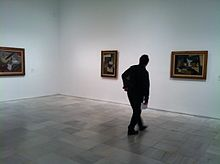

La aparición de la institución museística en España va estrechamente unida al coleccionismo real, eclesiástico y nobiliario, de donde surgirán las dos grandes tipologías de museos en cuanto a su titularidad: los públicos y los privados.
Los museos públicos tienen como base fundamental las colecciones reales y eclesiásticas. En particular destacan Isabel la Católica, Carlos I, Felipe II, Felipe IV, Felipe V, Carlos III o Carlos IV. La Iglesia, por su parte, acumula a lo largo de los siglos el otro gran tesoro artístico de España, parte del cual pasará tras los procesos desamortizadores a constituir la base de los Museos provinciales, de titularidad pública.
En el Directorio de Museos y Colecciones de España aparecen registrados más de 1600 instituciones museísticas.Estas pueden dividirse u organizarse según varios criterios; si atendemos a la titularidad, los museos pueden ser públicos, privados o mixtos. En España la mayoría de ellos, más de 1100, son de titularidad pública.
Aunque la idea de conservar objetos valiosos o de atesorarlos es casi tan antigua como el ser humano, la creación de museos tal y como los entendemos hoy comienza en España y en muchos países de nuestro entorno en el siglo XIX, cuando el Estado se hace consciente de su riqueza patrimonial y de la necesidad de intervenir para conservarla. La preponderancia de museos públicos en España responde a esa preocupación.
También existen en nuestro país museos privados con una génesis muy variada: en un buen número de ellos son museos vinculados a la Iglesia católica, que ha sido históricamente un comitente artístico importante; pero también hay iniciativas de coleccionistas privados que han creado museos para permitir al público disfrutar de lo que en su origen fueron colecciones para disfrute privado.
